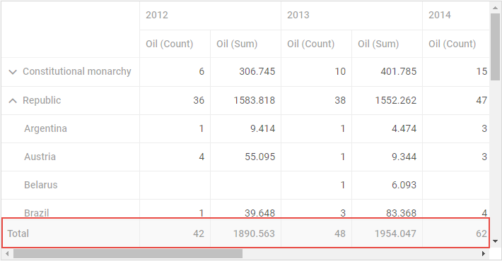
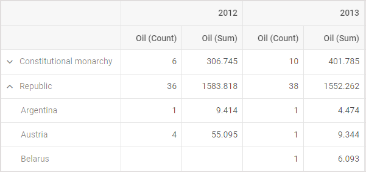
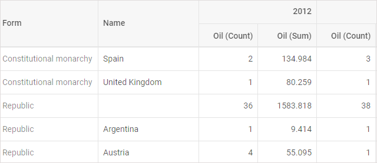
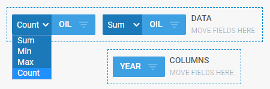
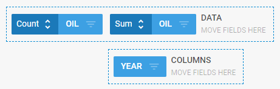

The names of the fields relate to the key names of the data properties. To change the default name of the field, you can specify the desired name with the help of the fieldList property of the Pivot configuration object.
var pivot = new dhx.Pivot(container, {
data: dataset,
fields: {
// pivot fields structure
},
fieldList: [ { id: "name", label: "Name" }, { id: "gdp", label: "GDP" }, // more fields ] }
);
You can sort columns by a click on column headers. Besides, you can set the sorting direction for columns and rows. Make use of the sortDir property for each field in a fieldList:
new dhx.Pivot(document.body, {
data: dataset,
fields: {
// pivot fields structure
},
fieldList: [
{ id: "name", label: "Name", sortDir: "desc" },
{ id: "year", label: "Year", sortDir: "asc" },
// more fields
]
});
In this example, the names are sorted in the descending order, and data for years are sorted in the ascending order.
Related sample: Headers sort direction - DHTMLX Pivot
In case your dataset contains dates, you should set a special type "date" for fields with dates and set common format for dates in the dataset.
fieldList: [
{ id: "name", label: "name" },
{ id: "when", label: "when", type: "date", format: "%d/%m/%Y" }
]
Date fields allow you to group data by dates. You can choose the necessary type of grouping by clicking the toggle button in the date field.
There are several types of operations that allow grouping data by dates:
Setting predefined date grouping type
If you want rows or columns of Pivot to be grouped by a certain date type, you need to set a date field in the corresponding row/column as an object with two properties:
fields: {
rows: ["form", "name"],
columns: ["year", { "id": "when", "group": "dateByQuarter" }],
fields: [{ id: "oil", method: "max" }, { id: "oil", method: "sum" }],
}
The types of grouping correlate with the types of operations with dates:
It is also possible to define custom date grouping types.
Available formats of dates
While specifying the format for dates, you can use any character from the following list:
| %d | day as a number with leading zero, 01..31 |
| %j | day as a number, 1..31 |
| %D | short name of the day, Su Mo Tu... |
| %l | full name of the day, Sunday Monday Tuesday... |
| %m | month as a number with leading zero, 01..12 |
| %n | month as a number, 1..12 |
| %M | short name of the month, Jan Feb Mar... |
| %F | full name of the month, January February March... |
| %y | year as a number, 2 digits |
| %Y | year as a number, 4 digits |
| %h | hours 12-format with leading zero, 01..12) |
| %g | hours 12-format, 1..12) |
| %H | hours 24-format with leading zero, 01..24 |
| %G | hours 24-format, 1..24 |
| %i | minutes with leading zero, 01..59 |
| %s | seconds with leading zero, 01..59 |
| %a | am or pm |
| %A | AM or PM |
| %% | escape for % |
| %u | milliseconds |
| %P | timezone offset |
By default, all four types of operations are available for columns. If you want to use just some of them, you need to specify the desired types in the operations array within the types object. (Set the types object as an attribute of the Pivot config object).
var pivot = new dhx.Pivot(document.body, {
data: dataset,
fields: {
// fields structure
},
fieldList: [
// full list of fields
],
types: {
operations: [
{ id: "sum", label: "sum" },
{ id: "min", label: "min" },
{ id: "max", label: "max" }
]
}
});
You can set a different name for an operation by changing its label:
types: {
operations: [
{ id: "sum", label: "SUM" },
{ id: "min", label: "MIN" },
{ id: "max", label: "max" },
{ id: "count", label: "count"}
]
}
Note that besides the renamed operations, you should also define all needed operations, even if their names are not changed. Otherwise, they won't be displayed, since the new types object will replace the previous one.
Related sample: Available methods - DHTMLX Pivot
There is a set of attributes you can use to get the necessary look and feel of Pivot layout. The layout configuration is adjusted with the help of the layout property of the Pivot configuration object (the second parameter of the constructor function).
var pivot = new dhx.Pivot(document.body, {
data: dataset,
fields: {
rows: ["form", "name"],
columns: ["year"],
values: [{ id: "oil", method: "max" }, { id: "oil", method: "sum" }],
},
fieldList: [
{ id: "name", label: "name" },
// the full list of fields
],
layout: { leftMargin: 300, // other attributes } }
);
You can use the following attributes inside the layout object:
You can get the current configuration settings defined for Pivot.
If necessary, you can specify the read-only mode for Pivot. In this mode only the grid part of the Pivot will be rendered on the screen. Thus, it won't be possible to modify the predefined settings.
To make Pivot read-only, you need to set the readonly attribute of the layout object to true:
var pivot = new dhx.Pivot(document.body, {
data: dataset,
fields: {
// fields structure
},
fieldList: [
// full list of fields
],
layout: {
readonly: true }
}
);
Related sample: Readonly mode - DHTMLX Pivot
You can specify a footer row for the grid of pivot to show a total result of the operation set for a column.

To add a footer, specify the footer:true option in the layout configuration:
var pivot = new dhx.Pivot(document.body, {
data: dataset,
fields: {
// fields structure
},
fieldList: [
// full list of fields
],
layout:{
footer:true }
});
Related sample: Grid with footer - DHTMLX Pivot
You can adjust the width of columns as well as of the headers of the rows via the related attributes of the layout configuration option:
rowsHeadersWidth - (number|string) sets the width of the rows headers. You can either set its value as a number of pixels to apply a fixed width to headers of rows or use "auto" to automatically adjust their width to the widest header.
columnsWidth - (number|string) sets the width of the columns. You can either set its value as a number of pixels to apply a fixed width or use "auto" to automatically adjust the width of a column to the widest cell.
Related sample: Set columns width - DHTMLX Pivot
var pivot = new dhx.Pivot(document.body, {
data: dataset,
fields: {
// fields structure
},
fieldList: [
// full list of fields
],
layout: {
columnsWidth:"auto", rowsHeadersWidth: "auto" }
});
Related sample: Columns auto width - DHTMLX Pivot
Related sample: Headers auto width - DHTMLX Pivot
You can change the mode of displaying data in the grid with the help of the gridMode attribute of the layout object. The attribute can take two values:


In the flat mode you can disable repeating of the headers content in every row by setting the repeatRowsHeaders property to false in the configuration of the layout object.
var pivot = new dhx.Pivot(document.body, {
data: dataset,
fields: {
rows: ["form", "name"],
columns: ["year"],
values: [{ id: "oil", method: "max" }, { id: "oil", method: "sum" }],
},
fieldList: [
{ id: "name", label: "name" },
// the full list of fields
],
layout: { gridMode:"flat", repeatRowsHeaders:false } }
);
Related sample: Grid flat mode - DHTMLX Pivot
By default, selectors of fields look like dropdown lists.

The fieldSelectorType attribute of the layout object provides the possibility to change their appearance. While by default this configuration property takes the "dropdown" value, there is also the "loop" value that you can use as an alternative:
var pivot = new dhx.Pivot(document.body, {
data: dataset,
fields: {
// fields structure
},
fieldList: [
// full list of fields
],
layout: {
fieldSelectorType:"loop" }
}
);
This is how the "loop" type of fields' selectors look like:

Related sample: Field selectors - DHTMLX Pivot
Back to top